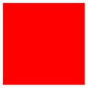

The TikZ and PGF Packages
Manual for version 3.1.9a
TikZ
26 Animations
TikZ Library animations ¶
\usetikzlibrary{animations} %
LaTeX
and plain
TeX
\usetikzlibrary[animations] % ConTeXt
This library must be loaded in order to use animations with
TikZ.
26.1 Introduction¶
An animation changes the appearance of some part of a graphic over time. The archetypical animation is, of course, a movement of some part of a picture, but a change of, say, the opacity of a path is also an animation. TikZ allows you to specify such animations using special keys and notations.
\begin{tikzpicture}[
animate/orbit/.style 2 args = {
myself:shift =
{
along
= {
(0,0) circle [radius=#1]
} sloped
in #2s/10,
repeats
}} ]
\node :color
= {0s
=
"orange",
2s
=
"red",
4s
=
"orange",
repeats}
{Sun};
\begin{scope}[animate={orbit={2.5cm}{365}}]
\node {Earth};
\node [animate={orbit={1cm}{28}}] {Moon};
\end{scope}
\useasboundingbox (-3.8,-3.8) (3.8,3.8);
\end{tikzpicture}
Adding an animation to a TikZ picture is done as follows:
-
1. Before or in the options of the to-be-animated object you specify the object together with an attribute that you wish to animate. Attributes are things like the fill color or the line width or the position of the object.
-
2. You specify when this attribute should have which values using a so-called timeline. This is just a curve that specifies for each point in time which value the attribute should have.
-
3. You can additionally use further options to configure the animation, for instance you can specify that the animation should repeat or that it should only start when a certain object is clicked.
As a simple example, let us move a circle within thirty seconds by three centimeters to the left:
As can be seen, a special syntax is used in several places: Entries with a colon such as :xshift specify an attribute, values are specified in quotation marks. This syntax will be explained in more detail later on.
26.1.1 Animations Change Attributes¶
Before we plunge into the details of how animations are specified, it is important to understand what TikZ actually does when creating an animation: It does not (as all other animation packages do) precompute a sequence of pictures that are later somehow displayed in rapid succession. Neither does it insert an external video into the document. Rather, a TikZ animation is just an “annotation” in the output that a certain attribute of a certain object should change over time in some specific way when the object is displayed. It is the job of the document viewer application to actually compute and display the animation. The big advantage of this approach is that animations neither increase the output file sizes noticeably nor do they really slow down TeX: The hard and complicated calculations are done by the viewer application. The disadvantage is, of course, that a document viewer application must understand the annotations and actually compute and display the animations. The svg format is a format for which this is possible, the popular pdf format is not. For the svg format, there are actually different possible ways of “formulating” the animations (using smil or css or JavaScript) and they have different advantages and disadvantages.
To make a long story short: TikZ animations currently work only with svg output (and use the smil “flavor” of describing animations). In future, it may well happen that other “flavor” of describing animations will be added, but it is very unlikely that pdf will ever support animations in a useful way.
It is, however, possible to create “snapshots” of an animation and insert these into pdf files (or any other kind of file including svg files), see Section 26.6 for details. Snapshots are also useful for creating “printed versions” of animations and all of the small sequences of pictures in the manual that are used for showing what an animation key does have been creating using snapshots.
26.1.2 Limitations of the Animation System¶
There are a certain limitations of the animation system that you should keep in mind when considering how and when to use it:
-
1. As pointed out earlier, animations require a specific output format (currently only svg is supported).
-
2. It is extremely difficult to animate “lines between moving nodes” correctly. Consider code like \draw(a)--(b); where a and b are nodes. Now, when you animate the position of (a), the line connecting (a) and (b) will, unfortunately, not “move along” automatically (but it is easy to move the whole group of (a), (b), and the connecting line as whole). You must “cheat” and introduce some “virtual” nodes, which leads to rather complex and bloated code.
-
3. Animations are taken into consideration for bounding box computations, but only for shifts, not for rotations, scaling, or skewing and also possibly not when multiple shifts are active at the same time for the same object.
26.1.3 Concepts: (Graphic) Objects¶
During an animation an attribute of a certain “object” changes over time. The term “object” is deliberately a bit vague since there are numerous different “things” whose attributes can change. In detail, the following objects have attributes that can be animated:
-
1. Nodes, which are created by the \node command (and, also, internally by commands such as \graph). For nodes, different parts of the node can be animated separately; for instance, you can animate the color of the background path, but also the color of the text, and also the color of the foreground path (though most nodes do not have a foreground path) and also the color of different text parts (though only few nodes have multiple text parts).
-
2. Graphic scopes, which are created by numerous command, including the {scope} environment, the \scopes command, but also \tikz itself creates a graphic scope and so does each node and even each path.
-
3. View boxes, which can only be created using the views library.
-
4. Paths, which you create using the \path command or commands like \draw that call \path internally. However, the (usually background) path of a node can also be animated. Note that “animating the path” really means that the path itself should change over time; in essence, you can “warp” a path over time.
In all of these cases, you must either specify the animation inside the object’s options using animate or use the name key to name the object and, then, refer to it in an animate. For nodes you can, of course, use the (⟨node name⟩) syntax to name the node. Recall that you must always specify the animation before the object is created; it is not possible to animate an already created object.
There is a special syntax for choosing the object of an animation, see Section 26.3.1, but you can also use the object key to choose them directly, see Section 26.2.3.
26.1.4 Concepts: Attributes¶
In addition to the to-be-animated object, you must also choose an attribute that you wish to animate. Attributes are things like the color of an object, the position, but also things like the line width. The syntax for choosing attributes and the list of attributes will be explained in detail later on.
Most attributes correspond directly to attributes that are directly supported by the backend driver (svg), but this is not always the case. For instance, for a node, TikZ differentiates between the fill color, the draw (stroke) color, and the text color, while svg treats the text color are a special case of the fill color. TikZ will do some internal mappings to ensure that you can animate the “TikZ attributes” even when they are not directly supported.
The same syntax that is used for specifying object is also used to specify attributes, see Section 26.3.1, but you could also set them directly using the attribute key see Section 26.2.4.
26.1.5 Concepts: Timelines¶
Once an object and an attribute have been chosen, a timeline needs to be established. This is, essentially, a curve that specifies for each “moment in time” which value the attribute should have.
A timeline has a start and an end, but the start need not be the “moment zero” (we will come to that) and may even be negative, while the end may be at infinity. You specify the timeline by specifying for certain points in time what the value is at that moment; for all other moments the value is then interpolated. For instance, if you specify that the attribute :xshift (the “horizontal position” of the object) is 0 mm at time 5 s and 10 mm at time 10 s, then at 7.5 s it will be 5 mm and at 9 s it will be 8 mm (assuming a linear interpolation). The resulting optical effect will be that the object smoothly moves by one centimeter to the right over a period of five seconds, starting five seconds after “moment zero”.
Now, what is the “moment zero”, the “beginning of an animation”? If nothing else is specified, an animation starts immediately when the graphic is shown and this is the moment zero relative to which the timeline is measured. However, it is also possible to change this. In particular, you can specify that the moment zero is when a particular event occurs such as the user clicking on another object or another animation ending or starting.
The interpolation of values is not always a straightforward affair. Firstly, for certain kinds of values is not clear how an interpolation should be computed. How does one interpolate between two paths? Between the colors red and green? Between the values "true" and "false"? In these cases, one must define carefully what the interpolation should be. Secondly, you may wish to use a non-linear interpolation, which is useful for “easing” motions: The visual effect of the movement specified above is that the object sits still from moment \(0\) for five seconds, then there is an “infinite acceleration” causing the object to suddenly move at the speed of 2 mm per second, then there is no acceleration at all for five seconds, causing the object to move for one centimeter, followed by an “infinite negative acceleration” that makes the object come to a full stop. As a viewer you experience these infinite accelerations as “unrealistic”, spoiling the effect of watching a (virtual) physical process. Non-linear interpolations allow you to avoid this effect.
Just as for specifying objects and attributes, there is also a special syntax for specifying times and values.
26.2 Creating an Animation¶
26.2.1 The Animate Key¶
In order to animate a picture, you create timelines for all objects and attributes that change during the animation. The key animate is used for creating these timelines.
/tikz/animate=⟨animation specification⟩(no default) ¶
You must place all specifications of animations inside uses of animate. You can, and usually should, place the specification of all timelines of a single picture inside a single use of this key since it will reset the time and the fork time (explained in Section 26.2.6). You can, however, use this key several times, in principle. Note that if you animate the same attribute of the same object in two different uses of animate, two separate timelines will result (and complicated rules are used to determine which one “wins” in case they specify conflicting values for the attribute at different times).
The key can be used at all places where a TikZ key is used; typically you will use it with a {scope} environment, inside the options of a node, or directly with the \tikz command:
The details of what, exactly, happens in the ⟨animation specification⟩ will be described in the rest of this section. However, basically, an ⟨animation specification⟩ is just a sequence of normal TikZ key–value pairs that get executed with the path prefix /tikz/animate and with some special syntax handlers installed. In particular, you can define styles for this key path and use them. For instance, we can define a shake animation like this:
\tikzset{
animate/shake/.style = {myself:xshift =
{ begin
on=click,
0s =
"0mm", 50ms = "#1", 150ms = "-#1", 250ms =
"#1", 300ms = "0mm" }}}
\tikz \node [fill =
blue!20, draw=blue, very thick, circle,
animate =
{shake = 1mm}] {Shake};
\tikz \node [fill =
blue!20, draw=blue, very thick, circle,
animate =
{shake = 2mm}] {SHAKE};
Note that, as stressed earlier, you can only use the animate key to specify animations for objects that do not yet exist. The node and object names mentioned in a specification always refer to “upcoming” objects; already existing objects of the same name are not influenced.
You can use the name key inside animate to “name” the animation. Once named, you can later reference the animation in other animations; for instance, you can say that another animation should start when the present animation has ended.
26.2.2 Timeline Entries¶
The “job” of the options passed to the animate key is to specify the timelines of the animation of (a part of) a picture. For each object and each attribute there may or may not be a timeline and, if present, the timeline consist of sequences of pairs of times and values. Thus, the most basic entity of an animation specification is a tuple consisting of five parts, which are selected by five different keys:
-
• object for selecting the object,
-
• attribute for selecting the attribute,
-
• id for selecting the timeline id (explained in Section 26.2.5),
-
• time for selecting a time, and
-
• value for selecting a value.
When all of these parts have been set up (using the above keys, which will be explained in more detail in a moment), you can use the following key to create an entry:
/tikz/animate/entry(no value) ¶
Each time this key is used in the options of animate, TikZ checks whether the five keys object, attribute, id, time, and value are set. If one of them is not set, nothing happens. (The id key is set to the value default by default, all other keys must be set explicitly.)
If all of these keys are set, a time–value pair is created and added to the timeline of attribute of the object. Additionally, all options starting with /tikz/animate/options/, which also influence the timeline like begin on, are also added to the timeline of the object–attribute pair.
In the above example, it would not have been necessary the specify the object and the attribute in each line, they retain their values unless they are overwritten. Thus, we could also have written:
Note, however, that in both examples we actually add the time–value pair \((2\mathrm {s}, \mathrm {blue})\) twice since the time and value keys also retain their settings and, thus, for the third entry they have the same values as before and a new pair is added. While this superfluous pair is not a problem in the example (it has no visual effect), we will see later on how such pairs can be avoided by using the scope key.
A sequence of calls of entry can freely switch between objects and attributes (that is, between timelines), but the times for any given timeline must be given in non-decreasing order:
\tikz [animate =
{
object
=
node, attribute
= fill, time
= 0s, value =
red, entry,
object
= node2, attribute
= draw, entry,
object
=
node, attribute
= fill, time
= 2s, value =
blue, entry,
object
= node2, attribute
= draw, entry,
object
=
node, attribute
= fill, begin
on = click, entry,
object
= node2, attribute
= draw, begin
on = click, entry}] {
\node (node) [fill, text=white] { Node
1
};
\node (node2) [draw, ultra thick] at
(0,-1) { Node
2
};
}
In the above example, we could not have exchanged the first two lines of the animate options with the third and fourth line since the values for time 0s must come before the values for time 2s.
In the following, we have a closer look at the five keys the influence the entry key and then have a look at ways of grouping keys more easily.
26.2.3 Specifying Objects¶
You use the object key to select the object(s) to which the next use of entry applies. There is also a special syntax for this, which is explained in Section 26.3.1.
/tikz/animate/object=⟨list of objects⟩(no default) ¶
The ⟨list of objects⟩ is a comma-separated list of strings of the form ⟨object⟩.⟨type⟩. All of the objects in the list are selected as to-be-animate object for the next use of the entry key. The objects referred to by ⟨object⟩ will be the next objects with the name key set to ⟨object⟩. You can apply the name key to nodes (where you can also use the special parentheses-syntax and put the name in parentheses, it has the same effect), but also to scopes and paths. (The name path key is not the same as name; it is an older key from the intersections package and not related.)
\tikz [animate =
{ object =
b, :fill = {0s = "red", 2s = "blue",
Ȁ
href="base-animations.html#pgf.begin">begin on = click
}}] {
\node (a) [fill, text =
white, minimum width=1.5cm] at
(0,1cm) {a};
\node (b) [fill, text =
white, minimum width=1.5cm] at
(0,5mm) {b};
\node (c) [fill, text =
white, minimum width=1.5cm] at
(0,0mm) {c}; }
\tikz [animate =
{ object =
b, :fill = {0s = "red", 2s = "blue",
Ȁ
href="base-animations.html#pgf.begin">begin on = click
},
object
= c, :fill = {0s = "green", 2s = "blue",
Ȁ
href="base-animations.html#pgf.begin">begin on = click
} }] {
\scoped [name =
a, yshift=1cm] \fill (0,0) rectangle
(1.5cm,2mm);
\scoped [name =
b, yshift=5mm] \fill (0,0) rectangle
(1.5cm,2mm);
\scoped [name =
c, yshift=0mm] \fill (0,0) rectangle
(1.5cm,2mm); }
If the ⟨object⟩ name is never used later in the file, no animation is created.
The ⟨object⟩ may also be the special text myself. In this case, the referenced object is the scope or object to which the animate key is given. If an object is named myself (as in \node (myself) ...), you cannot reference this node using the object key, myself always refers to the object where the animate key is given (of course, you can animate the node named myself by placing the animate key inside the options of this node; you only cannot “remotely” add an animation to it).
The ⟨object⟩ may be followed by a dot and a type. This is needed in rare cases where you want to animate only a special “part” of an object that is not accessible in other ways. Normally, TikZ takes care of choosing these types automatically, you only need to set these “if you know what you are doing”.
26.2.4 Specifying Attributes¶
/tikz/animate/attribute=⟨list of attributes⟩(no default) ¶
The list of attributes must be a comma-separated list of attribute names. The timelines specified later will apply to all of these attributes (and to all objects previously selected using object). Possible attributes include colors, positions, line width, but even the paths themselves. The exact list of possible attributes is documented in Section 26.4.
26.2.5 Specifying IDs¶
/tikz/animate/id=⟨id⟩ (no default, initially default) ¶
Timelines are use to defined how the values of an attribute of an object change over time. In many cases, you will have at most one timeline for each object–attribute pair, but, sometimes, you may wish to have more than one timeline for the same object and the same attribute. For instance, you might have a timeline that specifies a changing shift of a node in some direction and, at the same time, another timeline that specifies an additional shift in some other direction(s). The problem is that there is only one shift attribute and it would be difficult to compute the joint effect of the two timelines.
For this purpose, timelines are actually identified not only by the object–attribute pair but, in reality, by the triple consisting of the object, the attribute, and the value of this key. We can now specify two separate timelines:
The default value of id is default.
Because of the possibility of creating multiple timelines for the same attribute, it may happen that there is more than one timeline active that is “trying to modify” a given attribute. In this case, the following rules are used to determine, which timeline “wins”:
-
1. If no animation is active at the current time (all animation either have not yet started or they have already ended), then the base value given in the animation encountered last in the code is used. (If there are no base values, the attribute is taken from the surrounding scope and the animations have “no effect”.)
-
2. If there are several active animations, the one that has started last is used and its value is used.
-
3. If there are several active animations that have started at the same time, the one that comes last in the code is used.
Note that these rules do not apply to transformations of the canvas since these are always additive (or, phrased differently, they are always all active and the effects accumulate).
26.2.6 Specifying Times¶
/tikz/animate/time=⟨time⟩later(no default) ¶
Sets the time for the next time–value pair in a call of entry to ⟨time⟩ plus the current fork time. The text later is optional. Both “fork times” and the optional later will be explained in a moment.
Time Parsing. The ⟨time⟩ is parsed using the command \pgfparsetime, which is essentially the same as the usual math parser of TikZ, and the result is interpreted as a time in seconds. Thus, a ⟨time⟩ of 2+3 means “5 seconds” and a ⟨time⟩ of 2*(2.1) means “4.2 seconds”. (You could even specify silly times like 1in, which results in the time “72.27 seconds”. Please do not do that.) The “essentially” refers to the fact that some extras are installed when the time parser is running:
• The postfix operator s is added, which has no effect. Thus, when you write 5s you get the same results as 5, which is exactly 5 seconds as desired.
• The postfix operator ms is added, which divides a number by 1000, so 2ms equals 0.002s.
• The postfix operator min is added, which multiplies a number by 60.
• The postfix operator h is added, which multiplies a number by 3600.
• The infix operator : is redefined, so that it multiplies its first argument by 60 and adds the second. This implies that 1:20 equals 80s and 01:00:00 equals 3600s.
• The parsing of octal numbers is switched off to allow things like 01:08 for 68s.
Note that you cannot use the colon syntax for times in things like 01:20 = "0" would (falsely) be interpreted as: “For the object named 01 and its attribute named 20, do something.” You can, however, use 01:20 in arguments to the time key, meaning that you would have to write instead: time = 1:20, "0", possibly surround by a scope.
Relative Times. You can suffix a time key with “later”. In this case, the ⟨time⟩ is interpreted as an offset to the time in the previous use of the time key:
In reality, the offset is not taken to just any previous use of the time key, but to the most recent use of this key or of the resume key in the current local TeX scope. Here is an example:
time
=
2s,
time
=
1s
later, % same as time = 3s
time
=
500ms
later, % same as time = 3.5s
time
=
4s,
time
=
1s
later, % same as time = 5s
scope
=
{ % opens a local scope
time
=
1s
later, % same as time = 6s
time
=
10s
time
=
1s
later
% same as time = 11s
}, % closes the scope, most recent time is 5s once more
time
=
2s
later
% same as time = 7s
Fork Times. The time meant by the value ⟨time⟩ passed to the time key is not used directly. Rather, TikZ adds the current fork time to it, which is 0s by default. You can change the fork time using the following key:
/tikz/animate/fork=⟨t⟩ (default 0s later) ¶
Sets the fork time for the local scope to ⟨t⟩ and sets the current time to 0s. In this scope, when you use “absolute” times like 0s or 2s, you actually refer to later times that have started as ⟨t⟩.
One application of forks is in the definition of keys that add a certain part to a longer animation. Consider for instance the definition of a highlight key:
In the above example, we could also have written 0.1s later instead of 0.2s and, indeed, the whole style could have been defined using only times with later, eliminating the need for the fork key. However, using forks you can specify absolute times for things happening in a conceptual “subprocess” and also relative times. The name fork for the key is also borrowed from operating system theory, where a “fork” is the spawning of an independent process.
Remembering and Resuming Times. When you have a complicated animation with a long timeline, you will sometimes wish to start some animation when some other animation has reached a certain moment; but this moment is only reached through heavy use of later times and/or forks. In such situations, the following keys are useful:
/tikz/animate/remember=⟨macroname⟩(no default) ¶
This key stores the current time (the time of the last use of the time key) globally in the macro ⟨macroname⟩. This time will include the offset of the fork time:
/tikz/animate/resume=⟨absolute time⟩(no default) ¶
The ⟨absolute time⟩ is evaluated using \pgfparsetime and, then, the current time is set to the resulting time minus the fork time. When the ⟨absolute time⟩ is a macro previously set using remember, the net effect of this is that we return to the exact “moment” in the global time line when remember was used.
Using resume you can easily implement a “join” operation for forked times. You simply remember the times at the ends of the forks and then resume the maximum time of these remembered times:
26.2.7 Values¶
/tikz/animate/value=⟨value⟩(no default) ¶
This key sets the value of the next time–value pair created by entry to ⟨value⟩. The syntax of the ⟨value⟩ is not fixed, it depends on the type of the attribute. For instance, for an attribute like opacity the ⟨value⟩ must be an expression that can be evaluated to a number between 0 and 1; for the attribute color the ⟨value⟩ must, instead, be a color; and so on. Take care that when a value contains a comma, you must surround it by braces as in "{(1,1)}".
The allowed texts for the ⟨value⟩ is always the same as the one you would pass to the TikZ option of the same name. For instance, since the TikZ option shift expects a coordinate, you use coordinates as ⟨value⟩ with the usual TikZ syntax (including all sorts of extensions, the animation system calls the standard TikZ parsing routines). The same is true of dimensions, scalar values, colors, and so on.
In addition to the values normally use for setting the attribute, you can also (sometimes) use the special text current value as ⟨value⟩. This means that the value of the point in the timeline should be whatever the value the attribute has at the beginning of the timeline. For instance, when you write
animate
=
{ obj:color
=
{ 0s
=
"current
value", 2s
=
"white"
} }
the color of obj will change from whatever color it currently has to white in two seconds. This is especially useful when several animations are triggered by user events and the current color of obj cannot be determined beforehand.
There are several limitations on the use of the text current value, which had to be imposed partly because of the limited support of this feature in svg:
• You can use current value only with the first time in a timeline.
• You can only have two times in a timeline that starts with current value.
• You cannot use current value for timelines of which you wish to take a snapshot.
26.2.8 Scopes¶
When you specify multiple timelines at the same time, it is often useful and sometimes even necessary to have keys be set only locally. The following key makes this easy:
/tikz/animate/scope=⟨options⟩(no default) ¶
Executed the ⟨options⟩ inside a TeX scope. In particular, all settings made inside the scope have no effect after the end of the scope.
Without the use of the scope key, the repeats key would also affect the draw attribute.
While the scope key is useful for structuring timeline code, it also keeps the current time local to the scope, that is, if you use something like 1s later after the scope, this will refer to one second after the last use of time before the scope. The times set inside the scope do not matter. While this is desirable effect for forks, you may also sometimes wish to synchronize the local time after the scope with the last time reached in the scope. The following key makes this easy:
/tikz/animate/sync=⟨options⟩(no default) ¶
A shorthand for scope={ ⟨options⟩ , remember=\temp},resume=\temp where \temp is actually an internal name. The effect is that after a sync the local time just continues as if the scope where not present – but regarding everything else the effects are local to the sync scope.
26.3 Syntactic Simplifications¶
In the previous subsection we saw how timelines can be created by specifying the individual entries of the timelines sequentially. However, most of the time you will wish to use a simpler syntax that makes it easier to specify animations. This syntax is only available inside the animate key (it is switched on at the beginning) and consists of three “parts”: The colon syntax, the time syntax, and the quote syntax.
26.3.1 The Colon Syntax I: Specifying Objects and Attributes¶
Inside the ⟨animation specification⟩ passed to the animate key, you can specify an object and an attribute of this object using the following syntax, whose use is detected by the presence of a colon inside a key:
⟨object name(s)⟩:⟨attribute(s)⟩ ={⟨options⟩}
or
⟨object name(s)⟩:⟨attribute(s)⟩_⟨id⟩ ={⟨options⟩}
In the place to the left of an equal sign, where you would normally use a key, you can instead place an object name and an attribute separated by a colon. Additionally, the attribute may be followed by an underscore and an ⟨id⟩, which identifies the timeline (see Section 26.2.5).
Each of these values may be missing, in which case it is not changed from its previous value.
The effect of the above code is the same as:
sync = { object = ⟨objects⟩, attribute = ⟨attribute⟩, id = ⟨id⟩, ⟨options⟩, entry }
although when the object, the attribute, or the id is left empty in the colon syntax, the corresponding setting will be missing in the above call of sync. Note that because of the sync the last time used inside the ⟨options⟩ will be available afterwards as the last time. Also note that an entry is added at the end, so any settings of keys like begin or repeats inside the ⟨options⟩ will get added to the timeline.
Let us now have a look at some examples. First, we set the ⟨object name⟩ to mynode and othernode and the ⟨attribute⟩ to opacity and to color:
animate
= {
mynode:opacity
=
{ 0s
=
"1", 5s
=
"0"
},
mynode:color
=
{ 0s
=
"red", 5s
=
"blue"
},
othernode:opacity
=
{ 0s
=
"1", 5s
=
"0"
},
}
Next, we do the same, but “in two steps”: First, we set the object to mynode, but leave the attribute open and, then, set the attribute, but leave the object:
animate
= {
mynode:
= {
:opacity
=
{ 0s
=
"1", 5s
=
"0"
},
:color
=
{ 0s
=
"red", 5s
=
"blue"
}
},
othernode:opacity
=
{ 0s
=
"1", 5s
=
"0"
},
}
Note how both in mynode: and in :opacity and :color you must provide the colon. Its presence signals that an object–attribute pair is being specified; only now either the object or the attribute is missing.
We can also do it the other way round:
animate
= {
:opacity
= {
mynode:
=
{ 0s
=
"1", 5s
=
"0"
},
othernode:
=
{ 0s
=
"1", 5s
=
"0"
}
},
mynode:color
=
{ 0s
=
"red", 5s
=
"blue"
}
}
Finally, if several objects should get the exact same values, we can also group them:
animate
= {
{mynode,othernode}:opacity
=
{ 0s
=
"1", 5s
=
"0"
},
mynode:color
=
{ 0s
=
"red", 5s
=
"blue"
}
}
As mentioned earlier, all references to objects will be interpreted to future objects, never to objects already created. Furthermore, also as mentioned earlier, TikZ allows you to specify myself as ⟨object⟩, which is interpreted as the scope or node where the animate is given (you cannot animate a node or scope named myself, this special name always refers to the current node). In order to have all attributes refer to the current object, you write:
The list of permissible attributes is given in Section 26.4.
26.3.2 The Colon Syntax II: Animating Myself¶
A frequent use of the animate key is for animating attributes of the current object myself. In these cases, it is a bit length to write
[animate =
{ myself: = { :some
attribute =
{...} } } ]
in the options of a node or a scope. For this reason, TikZ allows you to use a special syntax with nodes and scopes:
-
1. In a ⟨node specification⟩, which is everything following a node command up to the content of the node (which is surrounded by curly braces), you can write
:some attribute = {⟨options⟩}
and this will have the same effect as if you had written
[animate = { myself: = { :some attribute = {⟨options⟩}}}]
Note that you can use this syntax repeatedly, but each use creates a new use of the animate key, resulting in a new timeline. In order to create complex timelines for several objects, use the animate key.
-
2. For the commands \tikz, \scoped and the environments {tikzpicture} and {scope}, when they are followed immediately by
:some attribute = {⟨options⟩}
then
animate = { myself: = { :some attribute = {⟨options⟩}}}
is added to the options of the command or scope. Again, you can use the syntax repeatedly. Note that when an opening square bracket is encountered, this special parsing stops.
Let us have a look at some examples. First, we use the syntax to set the fill opacity of a node:
Next, we additionally rotate the node:
Note that there is no comma between consecutive uses of the colon syntax in this case. We could have exchanged the order of the options and the uses of the colon syntax:
We can also use the special syntax with the \tikz command itself:
Note that we could not have moved the [ultra thick] options before :rotate since the options in square brackets end the special parsing.
26.3.3 The Time Syntax: Specifying Times¶
For each object–attribute pair you must specify the timeline of the attribute. This is a curve that specifies for each “moment in time” which value the attribute should have. In the simplest case, you specify such a time–value pair as follows:
⟨time⟩ ="⟨value⟩"
When you specify time–value pairs, you must specify the times in chronological order (so earlier times come first), but you may specify the same time several times (this is useful in situations where you have a “jump” from one value to another at a certain moment in time: you first specify the value “from which the attribute jumps” and then you specify the value “to which the attribute jumps” for the same moment).
The above syntax is just a special case of a more general situation. Let us start with the times. The general syntax for specifying times is as follows:
⟨time⟩ = ⟨options⟩
Here, ⟨time⟩ is a text that “looks like a time”, which means that:
-
1. It is not a key and does not contain a colon and does not start with a quotation mark.
-
2. It starts with a digit, a plus or minus sing, a dot, or a parenthesis.
If these two things are the case, the above code is transformed to the following call:
sync = {time = ⟨time⟩, ⟨options⟩, entry}
26.3.4 The Quote Syntax: Specifying Values¶
We saw already in several examples that values are put in quotation marks (similar to the way this is done in xml). This quote syntax is as follows:
"⟨value⟩" base = ⟨options⟩
This syntax is triggered whenever a key starts with a quotation mark5 (and note that when the ⟨value⟩ contains a comma, you have to surround it by curly braces inside the quotation marks as in "{(1,1)}"). Then, the following code is executed:
sync = {value = ⟨value⟩, ⟨options⟩, entry}
This means that when you write 1s = "red", what actually happens is that TikZ executes the following:
Note that the second entry has no effect since no value is specified and the entry key only “takes action” when both a time and a value have been specified. Thus, only the innermost entry does, indeed, create a time–value pair as desired.
In addition to the above, if you have added base after the closing quote, the following gets executed before the above sync:
base = {value = ⟨value⟩}
This makes it easy to specify base values for timelines.
Interestingly, instead of 1s="red" you can also write "red"=1s. Let us now have a look at situations where this can be useful.
26.3.5 Timesheets¶
Using the sync key or using the three different syntactic constructs introduced earlier (the color syntax, the time syntax, the value syntax), you can organize the specification of an animation in different ways. Basically, the two most useful ways are the following:
-
1. You first select an object and an attribute for which you wish to establish a timeline and then provide the time–value pairs in a sequence:
animate = {
obj:color = {
0s = "red",
2s = "blue",
1s later = "green",
1s later = "green!50!black",
10s = "black"
}
}
When you specify timelines for several attributes of the same object, you can group these together:
animate = {
obj: = {
:color = { 0s = "red", 2s = "green" },
:opacity = { 0s = "1", 2s = "0" }
}
}
In this way of specifying animations the “object comes first”.
-
2. Alternatively, you can also group the animation by time and, for each “moment” (known as keyframes) you specify which values the attributes of the object(s) have:
animate = {
0s = {
obj:color = "red",
obj:opacity = "1"
},
2s = {
obj:color = "green",
obj:opacity = "0"
}
}
Naturally, in this case it would have been better to “move the object outside”:
animate = {
obj: = {
0s = {
:color = "red",
:opacity = "1"
},
2s = {
:color = "green",
:opacity = "0"
}
}
}
When there are several objects involved, we can mix all of these approaches:
animate = {
0s = {
obj: = {
:color = "red",
:opacity = "1"
},
main node: = {
:color = "black"
}
},
2s = {
obj: = {
:color = "green",
:opacity = "0"
},
main node: = {
:color = "white"
}
}
}
26.4 The Attributes That Can Be Animated¶
The following ⟨attributes⟩ are permissible (actually, the attribute names do not include a colon, but since they will almost always be used with the colon syntax, it makes it easier to identify them):
-
• :dash phase
-
• :dash pattern
-
• :dash
-
• :draw opacity
-
• :draw
-
• :fill opacity
-
• :fill
-
• :line width
-
• :opacity
-
• :position
-
• :path
-
• :rotate
-
• :scale
-
• :stage
-
• :text opacity
-
• :text
-
• :translate
-
• :view
-
• :visible
-
• :xscale
-
• :xshift
-
• :xskew
-
• :xslant
-
• :yscale
-
• :yshift
-
• :yskew
-
• :yslant
These attributes are detailed in the following sections, but here is a quick overview of those that do not have a TikZ key of the same name (and which thus do not just animate the attribute set using this key):
-
• :shift allows you to add an animated shifting of the canvas, just like TikZ’s shift key. However, in conjunction with the along key, you can also specify the shifting along a path rather than via a timeline of coordinates.
-
• :position works similar to :shift, only the coordinates are not relative movements (no “shifts”), but refer to “absolute positions” in the picture.
-
• :path allows you to animate a path (it will morph). The “values” are now paths themselves.
-
• :view allows you to animate the view box of a view.
-
• :visible decides whether an object is visible at all.
-
• :stage is identical to :visible, but when the object is not animated, it will be hidden by default.
26.4.1 Animating Color, Opacity, and Visibility¶
You can animate the color of the target object of an animation using the attributes fill, draw, and text. When the target of a color animation is a scope, you animate the color “used in this scope” for filling or stroking. However, when an object inside the scope has its color set explicitly, this color overrules the color of the scope.
Animation attribute :fill, :draw
Animation attribute :text
The text attribute only applies to nodes and you need to directly animate the text attribute of each node individually.
Unlike the fill and draw colors, you cannot animate the text color for scopes:
Animation attribute :color
The color attribute is not really an attribute. Rather, it is a shorthand for {draw,fill,text}. This means that color does not start a separate timeline, but continues the draw timeline, the fill timeline, and the text timeline.
Animation attribute :opacity, :fill opacity, :stroke opacity ¶
Similarly to the color, you can also set the opacity used for filling and for drawing using the attributes fill opacity and draw opacity, which are exactly the same as the usual TikZ keys of the same names.
Unlike colors, where there is no joint attribute for filling and stroking, there is a single opacity attribute in addition to the above two attributes. If supported by the driver, it treats the graphic object to which it is applied as a transparency group. In essence, “this attribute does what you want” at least in most situations.
\tikz \node :opacity
=
{ 0s="1", 2s="0", begin
on=click
}
[fill =
blue!20, draw =
blue, ultra thick, circle] {Click
me!};
Animation attribute :visible, :stage ¶
The difference between the visible attribute and an opacity of 0 is that an invisible object cannot be clicked and does not need to be rendered. The (only) two possible values for this attribute are false and true.
\tikz :visible
= {begin
on=click, 0s="false", 2s="false"}
\node (node) [fill =
blue!20, draw =
blue, very thick, circle] {Click
me!};
This stage attribute is the same as the visible attribute, only base="false" is set by default. This means that the object is only visible when you explicitly during the time the entries are set to true. The idea behind the name “stage” is that the object is normally “off stage” and when you explicitly set the “stage attribute” to true the object “enters” the stage and “leaves” once more when it is no longer “on stage”.
26.4.2 Animating Paths and their Rendering¶
The attributes of the appearance of a path that you can animate include the line width and the dash pattern, the path itself, as well as the arrow tips attached to the paths. Animating the line width and the dash pattern is easy since the animation attributes simply have that same names as the properties that they animate and the syntax for setting is also the same:
Animation attribute :line width
Note that you must specify number (or expressions that evaluate to numbers) as values, you cannot say thin or thick (these are styles, internally, and you also cannot say line width=thick).
Animation attribute :dash, :dash phase, :dash phase
The values for an animation of the dashing are specifications (see the dash key for details) consisting of a sequence of on and off numbers. In each value of the animation the length of these sequences must be identical. The interpolation of the values is done for each position of the sequences individually, and also on the phase.
This dash pattern key allows you to animate the dash phase only. However, due to the way dashing is handled by certain drivers, the dash pattern is also set, namely to the current dash pattern that is in force when the animation is created.
The above attributes “only” influence how the path is rendered. You can, however, also animate the path itself:
Animation attribute :path
When you animate a path, the values are, of course, paths themselves:
There a number of things to keep in mind when you animate a path:
• The path “values” are parsed and executed in an especially protected scope to ensure that they have only little side effects, but you should not do “fancy things” on these paths.
• As for the dash pattern, you must ensure that all paths in the timeline have the same structure (same sequence of path construction commands); only the coordinates may differ. In particular, you cannot say that the path at 1s is a rectangle using rectangle and at 2s is a circle using circle. Instead, you would have to ensure that at both times the path consists of appropriate Bézier curves (which is cumbersome as the following example shows, where we used the fact that a circle consists of four Bézier curves):
\tikz \node :path
=
{
0s
=
"{(0,0) circle
[radius=1cm]}",
2s
=
"{(0,0)
(1,0) .. controls
+(0,0) and
+(0,0) .. (0,1)
.. controls
+(0,0) and
+(0,0) .. (-1,0)
.. controls
+(0,0) and
+(0,0) .. (0,-1)
.. controls
+(0,0) and
+(0,0) .. (1,0)
--
cycle
(0,0)}",
begin
on=click}
[fill =
blue!20, draw =
blue, ultra thick, circle] {Click
me!};
• You must specify arrow tips for an animated path in a special way, namely using the arrows key for animations, not the normal arrows key (see below).
/tikz/animate/arrows=⟨arrow spec⟩(no default) ¶
This key only has an effect on :path animations. It causes the arrow tips specified in ⟨arrow spec⟩ to be added to the path during the animation (the syntax is the same as for the normal arrows key). If you have several different animations for a paths, these may contain different arrow tips, but each animation must stick to one kind of arrow tips.
What happens internally when this key is used is the following: The specified arrow tips are rendered internally as so-called markers, which are small graphics that can be placed at the beginning and ends of paths and which “rotate along” as a path changes. Note that these markers are used only in the context of animated paths, the arrow tips of normal, “static” paths are drawn without the use of markers. Normally, there is no visual difference between an arrow tip drawn using markers or those drawn for static paths, but in rare cases there may be differences. You should only add arrows to open path consisting of a single segment with sufficiently long first and last segments (so that TikZ can shorten these segments correctly when necessary).
As pointed out earlier, the only way to add arrow tips to a path that is animated is using this key, you can not say something like
This will raise an error since you try to animate a path (:path = ...) that has normal arrow tips attached ([->]).
Instead, you must specify the arrow tips inside the animation command:
However, the above code now has a big shortcoming: While the animation is not running, no arrow tip is shown (the arrows key only applies to the animation.
The trick is to use the base key. It allows you to install a path as the “base” path that is used when no animation is running and the arrows specified for the animation will also be used for the base. All told, the “correct” way to specify the animation is the following (note that no static path is specified, any specified path would be overruled by the base path anyway):
Here is an example:
\tikz [very thick] {
\node (node) at
(-2,0)
[fill =
blue!20, draw =
blue, very thick, circle] {Click
me!};
\draw :path
=
{
0s
=
"{(0,0) to[out=90, in=180] (.5,1) to[out=0, in=90] (.5,.5)}"
base,
2s
=
"{(1,0) to[out=180, in=180] (.25,.5) to[out=0, in=180] (1,.5)}",
arrows
=
<.<->, begin
on
= {click, of=node} }; }
/tikz/animate/shorten < = ⟨dimension⟩(no default) ¶
/tikz/animate/shorten > = ⟨dimension⟩(no default) ¶
For animated paths, just as the key arrows has to be passed to the animation (to :path) instead of to the static path, the keys shorten > and shorten < also have to be passed to the :path key.
26.4.3 Animating Transformations: Relative Transformations¶
In order to animate the canvas transformation matrix, you do not animate an attribute called “:transform”. Rather, there are several attributes that all manipulate the canvas transformation matrix in different ways. These keys, taken in appropriate combination, allow you to achieve any particular canvas transformation matrix. All keys that animate the transformation matrix always accumulate.
Let us start with the “standard” attributes that are also available as keys in TikZ:
Animation attribute :scale, :xscale, :yscale
\tikz \node :scale
=
{ 0s="1", 2s="0.2", begin
on=click}
[fill =
blue!20, draw =
blue, ultra thick, circle] {Click
me!};
Animation attribute :rotate
The rotate key adds an animation of the rotation:
\tikz \node :rotate
=
{ 0s="45", 2s="90", begin
on=click}
[fill =
blue!20, draw =
blue, ultra thick, circle] {Click
me!};
Note that there is no rotate around attribute, but you can use the origin key to change the origin of the rotation.
Animation attribute :xskew, :yskew, :xslant, :yslant ¶
The keys add an animation of the skew (given in degrees) or slant (given as in the xslant and yslant key):
\tikz \node :xskew
=
{ 0s="0", 2s="45", begin
on=click}
[fill =
blue!20, draw =
blue, ultra thick, circle] {Click
me!};
\tikz \node :xslant
=
{ 0s="-1", 2s="1", begin
on=click}
[fill =
blue!20, draw =
blue, ultra thick, circle] {Click
me!};
Animation attribute :xshift, :yshift
\tikz \node :shift
=
{ 0s="{(0,0)}", 2s="{(5mm,-5mm)}",
begin
on=click}
[fill =
blue!20, draw =
blue, ultra thick, circle] {Click
me!};
\tikz \node :xshift
=
{ 0s="0pt", 2s="5mm", begin
on=click}
[fill =
blue!20, draw =
blue, ultra thick, circle] {Click
me!};
Animation attribute :shift
This :shift attribute can be animated in two ways. First, you can simply specify a sequence of coordinates in the same way as you would use the shift key in TikZ:
\tikz \node :shift
=
{ 0s
=
"{(0,0)}", 2s
=
"{(5mm,-5mm)}",
begin
on
=
click
}
[fill =
blue!20, draw =
blue, ultra thick, circle] {Click
me!};
However, you can also specify the sequence of positions along which the shift should occur in a different way, namely by specifying a path along which the object should be moved. This is often not only more natural to do, but also allows you to specify movements along curves.
/tikz/animate/options/along={⟨path⟩}⟨sloped or upright⟩ in⟨time⟩(no default) ¶
Use this key with a :shift (or a :position) to make TikZ shift the object by the coordinates along the ⟨path⟩. When this key is used, the values may no longer be coordinates, but must be fractions of the distance along the path. A value of "0" refers to the beginning of the path and "1" refers to the end:
Following the ⟨path⟩, which must be put in braces, you must either specify upright or sloped. In the first case, the to-be-animated object is moved along the path normally (and stays “upright”), whereas when you use sloped, the object will be continuously rotated so that it always points along the path.
In most motion animations that use along, you will set the value for 0s to "0" and the value for some specific ⟨time⟩ to "1". Because of this, you can add in ⟨time⟩ after the path, to achieve exactly this effect.
For the above attributes, it is not immediately clear which coordinate system should be used for the animation. That is, when you move an object 1cm “to the right”, where is “the right”? By default, movements and transformations like :shift or :scale are relative to the animation coordinate system, which defaults to the local coordinate system of the to-be-animated object. Consider the following example:
\tikz {
\draw [help lines] (-0.2,-0.2) grid
(2.2,2.2);
\node :rotate
=
{ 0s="0", 2s="45", begin
on=click}
at
(1,1) [fill =
blue!20, draw =
blue, ultra thick] {Click
me};
}
Note how the node rotates around its center even though this center is at position (1,1) in the picture’s coordinate system. This is because at (1,1) actually only does a shift of the coordinate system and the node is then drawn at the origin of this shifted coordinate system. Since this shifted coordinate system becomes the animation coordinate system, the rotation “around the origin” is actually a rotation around the origin of the animation coordinate system, which is at (1,1) in the picture’s coordinate system.
Let us, by comparison, do a rotation of a scope surrounding the node where the origin is not (yet) shifted:
\tikz {
\draw [help lines] (-0.2,-0.2) grid
(2.2,2.2);
\scoped :rotate
=
{ 0s="0", 2s="45", begin
on={click, of
next=n} }
\node (n) at
(1,1) [fill =
blue!20, draw =
blue, ultra thick] {Click
me};
}
Now the rotation is really around the origin of the picture.
Most of the time the animation coordinate system will be setup in the way “you expect”, but you can modify it using the following keys:
/tikz/animate/options/origin=⟨coordinate⟩(no default) ¶
Shifts the animation coordinate system by ⟨coordinate⟩. This has the effect that the “origin” for scalings and rotations gets shifted by this amount. In the following example, the point around which the rotation is done is the right border at (2,1) since the origin of the animation is at (1,1) relative to the picture’s origin and the origin key shifts it one centimeter to the right.
\tikz {
\draw [help lines] (-0.2,-0.2) grid
(2.2,2.2);
\node :rotate
=
{ 0s="0", 2s="45", begin
on=click,
origin
= {(1,0)}}
at
(1,1) [fill =
blue!20, draw =
blue, ultra thick] {Click
me};
}
/tikz/animate/options/transform=⟨transformation keys⟩(no default) ¶
While the origin key does only a shift, the transform key allows you to add an arbitrary transformation to the animation coordinate system using keys like shift, rotate or even reset cm and cm. In particular, origin=⟨c⟩ has the same effect as transform = {shift=⟨c⟩}. Note that the transformation only influences the animation, not the object itself.
As an example, when you say transform={scale=2}, an :xshift with a value of "1cm" will actually shift the object by 2cm. Similarly, after you say transform={rotate=90,scale=2}, the same :xshift of "1cm" will actually shift the object by 2cm upwards.
Note that, internally, TikZ has to invert the transformation matrix resulting from the ⟨transformation keys⟩ (plus the original animation transformation matrix), which can by numerically instable when you use ill-conditioned transformations.
\tikz {
\draw [help lines] (-0.2,-0.2) grid
(2.2,2.2);
\node :xshift
=
{ 0s="0cm", 2s="5mm", begin
on=click,
transform
= {rotate=-90} }
at
(1,1) [fill =
blue!20, draw =
blue, ultra thick] {Click
me};
}
\tikz {
\draw [help lines] (-0.2,-0.2) grid
(2.2,2.2);
\node :xshift
=
{ 0s="0cm", 2s="5mm", begin
on=click,
transform
= {rotate=-45, scale=2} }
at
(1,1) [fill =
blue!20, draw =
blue, ultra thick] {Click
me};
}
26.4.4 Animating Transformations: Positioning¶
The attributes for specifying transformations and, in particular, the :shift attribute are always expressed in the local animation coordinate system. This makes it easy to “shift around a node a little bit”, but makes it hard to move a node “from one position to another” since coordinates need to be expressed relative to the node’s coordinate system, which leads to all sorts of problems: Suppose you wish to have a node move from \((1,1)\) to \((2,1)\) and then to \((2,0)\). Now, if the node has already been placed at \((1,1)\) in the usual manner using at, then from the “node’s point of view” you need to move the node to \((0,0)\), \((1,0)\), and \((1,-1)\). To make matters worse, when you use named coordinates as in
\coordinate(A) at
(1,1);
\coordinate(B) at
(2,1);
\coordinate(C) at
(2,0);
and then say that the movement should be from (A) to (B) to (C), what should you expect? On the one hand, (A) and (1,1) should normally be interchangeable; on the other hand, (A) is a specific point in the plane, no matter from which coordinate system we look at it. It turns out that TikZ will stick to the second interpretation and actually turn (A) into (0,0) when it is parsed in the local coordinate system of a node starting at (A) – while (1,1) will stay the same.
Because of all these confusing effects, there is another attribute :position, which is similar to a :shift, but the coordinates are not interpreted in the local coordinate system of the node, but in the coordinate system that is in force when the animate key is used. For a node, this is prior to the setup of the node’s coordinate system and, thus, usually the picture’s coordinate system.
Animation attribute :position ¶
Compare the two animations, one with :position, one with :shift.
Compare this to a shift:
You can use the along key with :position in the same way as with :shift, which is especially useful for specifying that a node “travels” between positions of the canvas:
26.4.5 Animating Transformations: Views¶
The final method of changing the transformation matrix is to animate a view.
Animation attribute :view ¶
A view is a canvas transformation that shifts and scales the canvas in such a way that a certain rectangle “matches” another rectangle: The idea is that you “look through” a “window” (the view) and “see” a certain area of the canvas. View animation do not allow you to do anything that cannot also be done using the shift and scale keys in combination, but it often much more natural to animate which area of a graphic you wish to see than to compute and animate a scaling and shift explicitly.
In order to use a view, you first need to create a view, which is done using the meet or slice keys from the views library, see Section 77. You can then animate the view using the view attribute. The values passed to the entry key follow the same syntax as the views in the views library (though you only animate the to-be-viewed rectangle).
\tikz [very thick] {
\node (node) [fill =
blue!20, draw =
blue, very thick, circle] {Click
me!};
\draw [green!50!black] (1.2,-0.8) rectangle
(2.7,0.8);
\begin{scope}[view =
{(0,0) (2,2) at
(1.2,-0.8) (2.7,0.8)},
animate =
{myself:view = {
begin
on = {click, of=node},
0s
= "{(0,0) (2,2)}",
2s
= "{(1,1) (1.5,1.5)}" }}]
\draw [red] (10mm,10mm) rectangle
(15mm,15mm);
\node at
(10mm,10mm) [circle, fill=red, text=white, font=\tiny] {red};
\end{scope}
}
26.5 Controlling the Timeline¶
We can already specify timelines by giving a sequence of times in non-decreasing order along with corresponding values. In this section we have a look at further options that allow us to extend or control the timeline.
26.5.1 Before and After the Timeline: Value Filling¶
When you specify the timeline, you specify it for a certain interval \([t_1,t_2]\). By default, outside this interval the animation has no effect on the to-be-animated attribute. The following keys allows you to change this:
/tikz/animate/base=⟨options⟩(no default) ¶
A “base” value is a value that is used for the attribute whenever the timeline is not active:
Syntactically, the base key works much like special time syntax: It sets up a local sync scope and executes the ⟨options⟩ in it and creates an entry. However, instead of setting the time attribute to a time, it sets it to a special value that tells TikZ that when the entry is created, the current ⟨value⟩ should be used as the base value.
This means that you can write base = "orange" as in the above example to set the base. However, you can also use the base key in other ways; most noticeably, you can use it after some value:
Instead of using base as a key, you can also add base directly after the quotes of a value. This is particularly useful for setting up a base value that is also used in a timeline:
/tikz/animate/options/forever(no value) ¶
This key causes the timeline to continue “forever” after the last time with the last value. You can also think of this as having the animation “freeze” at the end.
/tikz/animate/options/freeze(no value) ¶
An alias for forever.
26.5.2 Beginning and Ending Timelines¶
The ⟨time⟩ used with the first use of the entry key in a timeline is the start time and the ⟨time⟩ in the last entry key is the stop time. However, this leaves open then question of when the whole timeline is to be started: The moment the document is opened? When the page is displayed? When the user scrolls to the to-be-animated object? When some other object is clicked? The key begin, and also the key end, allow you to specify answers to these questions.
/tikz/animate/options/begin=⟨time⟩(no default) ¶
This key specifies when the “moment 0s” should be relative to the moment when the current graphic is first displayed. You can use this key multiple times, in this case the timeline is restarted for each of the times specified (if it is already running, it will be reset). If no begin key is given at all, the effect is the same as if begin=0s had been specified.
It is permissible to set ⟨time⟩ to a negative value.
Note that this key has no effect for snapshots.
/tikz/animate/options/end=⟨time⟩(no default) ¶
This key will truncate the timeline so that it ends ⟨time⟩ after the display of the graphic, provided the timeline begins before the specified end time. For instance, if you specify a timeline starting at 2 s and ending at 5 s and you set begin to 1 s and end to 4 s, the timeline will run, relative to the moment when the graphic is displayed from 3 s to 4 s.
Instead of specifying the beginning of the timeline relative to the moment to to-be-animated graphic is displayed, you can also set the “moment 0s” to the moment a specific event happens using the following key:
/tikz/animate/options/begin on=⟨options⟩(no default) ¶
The ⟨options⟩ will be executed with the path /pgf/animation/events and will cause a new beginning to be added to the list of possible beginnings for the timeline (so the uses of this key accumulate). Each “beginning” is just another possible “moment 0s” for the timeline. For instance, when the ⟨options⟩ are set to click, then each time the graph is clicked a moment 0s starts for the timeline.
Most events are “caused” or “happen to” some object. For instance, the click event happens when you click on a certain object. In order to specify this object, use the following two keys inside the ⟨options⟩: of and of next. If neither of these keys are given, the to-be-animated object is used.
/pgf/animation/events/of=⟨id⟩.⟨type⟩(no default) ¶
This specifies a graphic object id in the same way as the whom key, also with an optional ⟨type⟩. This is the object that “causes” the event to happen.
Unlike the whom key, which always refers to a not-yet-existing object, this key always refers to an already existing object, namely to the most recent use of the ⟨id⟩. In the following example, the referenced object is the node with the label 2 since it is the most recently referenced node with ⟨id⟩ X.
\tikz [very thick] {
\node (X) at
(1,1.2) [fill =
blue!20, draw =
blue, circle] {1};
\node (X) at
(1,0.4) [fill =
orange!20, draw =
orange, circle] {2};
\node (node) :rotate
=
{0s="0", 2s="90", begin
on
=
{click, of
=
X}}
[fill =
red!20, draw =
red, rectangle] {Anim};
\node (X) at
(1,-0.4) [fill =
blue!20, draw =
blue, circle] {3};
\node (X) at
(1,-1.2) [fill =
blue!20, draw =
blue, circle] {4}; }
/pgf/animation/events/of next=⟨id⟩.⟨type⟩(no default) ¶
This key works like the of key, only it refers to a future (actually, the next) object with the given ⟨id⟩, not to a previous one. This, in the next example, the referenced node is the one with label 3.
\tikz [very thick] {
\node (X) at
(1,1.2) [fill =
blue!20, draw =
blue, circle] {1};
\node (X) at
(1,0.4) [fill =
blue!20, draw =
blue, circle] {2};
\node (node) :rotate
=
{
0s="0", 2s="90", begin
on
=
{click, of
next
=
X}}
[fill =
red!20, draw =
red, rectangle] {Anim};
\node (X) at
(1,-0.4) [fill =
orange!20, draw =
orange, circle] {3};
\node (X) at
(1,-1.2) [fill =
blue!20, draw =
blue, circle] {4}; }
The following key allows you to specify the event that should cause the animation to start:
/pgf/animation/events/event=⟨event name⟩(no default) ¶
Specifies the name of the event whose occurrence should start the timeline. Which events are supported depends on the device on which the animation is displayed, the output format (svg or some other format), and the setup of scripts, but here is a list of events supported by “plain svg”: click, focusin, focusout, mousedown, mouseup, mouseover, mousemove, mouseout, begin, end. However, the following keys make using these events simpler:
/pgf/animate/events/click(no value) ¶
This is a shorthand for event=click. This event gets triggered when the user clicks on the triggering object with a mouse (or something equivalent).
\tikz \node :rotate
=
{ 0s="0", 2s="90", begin
on
=
{click}}
[fill =
blue!20, draw =
blue, circle, ultra thick] {Here!};
/pgf/animation/events/mouse down(no value) ¶
Shorthand for event=mousedown. The event gets triggered when the user presses a mouse button down on the object.
\tikz \node :rotate
=
{ 0s="0", 2s="90", begin
on
=
{mouse
down}}
[fill =
blue!20, draw =
blue, circle, ultra thick] {Here!};
/pgf/animation/events/mouse up(no value) ¶
Shorthand for event=mouseup and gets triggered, of course, when a pressed button is released on the object.
\tikz \node :rotate
=
{ 0s="0", 2s="90", begin
on
=
{mouse
up} }
[fill =
blue!20, draw =
blue, circle, ultra thick] {Here!};
/pgf/animation/events/mouse over(no value) ¶
Shorthand for event=mouseover. The event gets triggered the moment the mouse cursor moves over the object.
\tikz \node :rotate
=
{ 0s="0", 2s="90", begin
on
=
{mouse
over} }
[fill =
blue!20, draw =
blue, circle, ultra thick] {Here!};
/pgf/animation/events/mouse move(no value) ¶
Shorthand for event=mousemove. The event gets triggered lots of times, namely each time the mouse moves while being “over” the object.
\tikz \node :rotate
=
{ 0s="0", 2s="90", begin
on
=
{mouse
move} }
[fill =
blue!20, draw =
blue, circle, ultra thick] {Here!};
/pgf/animation/events/mouse out(no value) ¶
Shorthand for event=mouseout. The opposite of mouse over: triggered when the mouse leaves the object.
/pgf/animation/events/begin(no value) ¶
Shorthand for event=begin. The “begin” refers to the beginning of another animation, namely the one referenced by of or of whom. This means that the current animation will begin when some other animation begins.
/pgf/animation/events/end(no value) ¶
Shorthand for event=end. Again, the “end” refers to the end of another animation, namely the one referenced by of or of whom. This means that the current animation will begin when some other animation ends.
/pgf/animation/events/focus in(no value) ¶
This is a shorthand for event=focusin. This event gets triggered when the graphic object gets the focus (this usually makes sense only for text input fields).
/pgf/animation/events/focus out(no value) ¶
This is a shorthand for event=focusout.
In addition to the events specified using the generic event key, there are two further events that take a parameter:
/pgf/animation/events/repeat=⟨number⟩(no default) ¶
The event is triggered when a repeating animation has been repeated ⟨number⟩ times.
/pgf/animation/events/key=⟨key⟩(no default) ¶
The event is triggered when the keyboard key ⟨key⟩ has been pressed. For security reasons, a viewer may suppress this.
Having specified the event, you can also specify a delay relative to this event:
/pgf/animation/events/delay=⟨time⟩(no default) ¶
Specifies that the timeline should not start with the event, but, rather, be delayed by ⟨time⟩.
When you use begin on to start an animation when a certain event is triggered, it is not clear what should happen when the event is triggered again. Should this be ignored completely? Should it only be ignored while the animation is running? The following key allows you to specify when should happen:
/tikz/animate/options/restart=⟨choice⟩ (default true) ¶
You can set ⟨choice⟩ to one of the following:
• true means that the animation will restart each time the event is triggered. If the animation is already running, it will be reset to its beginning. • false means that once the animation has started once, it will never be restarted.
• never means the same as false.
• when not active means that the animation will restart when the event is triggered, but not while the animation is running.
Just like begin on specifies when a timeline begins relative to some event, the end on allows you to stop is early when some event happens:
/tikz/animate/options/end on=⟨options⟩(no default) ¶
Works exactly like begin on, one possible end of the timeline is specified using the ⟨options⟩.
26.5.3 Repeating Timelines and Accumulation¶
/tikz/animate/options/repeats=⟨specification⟩(no default) ¶
Use this key to specify that the timeline animation should repeat at the end. The ⟨specification⟩ must consist of two parts, each of which may be empty. The first part is one of the following:
• Empty, in which case the timeline repeats forever.
• A ⟨number⟩ (like 2 or 3.25), in which case the timeline repeats ⟨number⟩ times.
• The text “for ⟨time⟩” (like for 2s or for 300ms), in which case the timeline repeats however often necessary so that it stops exactly after ⟨time⟩.
The second part of the specification must be one of the following:
• Empty, in which case each time the timeline is restarted, the attribute’s value undergoes the same series of values it did previously.
• The text accumulating. This has the effect that each time the timeline is restarted, the last values specified by the timeline is added to the value from the previous iteration(s). A typical example is an animation that shifts a scope by, say, 1 cm over a time of 1 s. Now, if you repeat this five times, normally the scope will shift 1 cm for 1 s then “jump back”, shift again, jump back, and so on for five times. In contrast, when the repeats are accumulating, the scope will move by 5 cm over 5 s in total.
/tikz/animate/options/repeat=⟨specification⟩(no default) ¶
An alias for repeats.
26.5.4 Smoothing and Jumping Timelines¶
Your specification of the timeline will consist of a sequence of times along with values that the attribute should have at these “key times”. Between these key times, the attribute’s value needs to be interpolated.
Suppose that an animation is supposed to interpolate a attribute’s value between the two values 50 and 100 over a time of 10 s. The simplest way of doing so is to do a linear interpolation, where the value as, say, 1 s is 55, at 2 s it is 60, and so on. Unfortunately, the linear interpolation does not “look” nice in many cases since the acceleration of a linear interpolation is zero during the animation, but infinite at the beginning and at the end; which looks “jerky”.
To avoid this, you can specify that the time–attribute curve should not be a straight line, but rather a curve. You specify this curve using a spline. The most logical “coordinate rectangle” used for this spline in our example would be (0s,50) and (10s,100) and we would like to specify something like
This would result in a time–attribute curve where the attribute at 50 changes slowly at 0 s and also arrives slowly at 100 at 10 s, but speeds up between these values.
We call the first control point (5s,50) the “exit control” and call (9s,100) the “entry control”: The first control dictates how quickly or slowly a time point is left, the second dictates how quickly or slowly we enter the next one.
The control points are, however, not specified in the coordinate system indicated above. Rather, the rectangle (0s,50) to (10s, 100) gets normalized to (0,0) to (1,1). The control point (5s,50) would thus become (0.5,0) and (9s,100) becomes (0.9,1).
/tikz/animate/options/exit control={⟨time fraction⟩}{⟨value fraction⟩}(no default) ¶
Specifies an exit control using two values as above. The spline from above would be specified as follows:
exit
control={0.5}{0},
entry
control={0.9}{1},
0s
=
"50",
10s
=
"100"
Note that the curve specified using exit and entry controls must be “well-behaved” in the sense that exactly one value must be specified for each point in time in the time interval.
In the next three example, we first specify a “smooth” exit from the start position, then a smooth arrival at the end position, and, finally both.
/tikz/animate/options/entry control={⟨time fraction⟩}{⟨value fraction⟩}(no default) ¶
Works like exit control.
/tikz/animate/options/ease in={⟨fraction⟩} (default 0.5) ¶
A shorthand for entry control={1-⟨fraction⟩}{1}.
/tikz/animate/options/ease out={⟨fraction⟩} (default 0.5) ¶
A shorthand for exit control={⟨fraction⟩}{1}.
/tikz/animate/options/ease={⟨fraction⟩} (default 0.5) ¶
A shorthand for ease in=⟨fraction⟩, ease out=⟨fraction⟩.
Note that since for the first time the entry control is ignored and, similarly, for the last time the exit control is ignored, using the ease key with an animation having only two times is particularly easy, since we only need to set ease once:
The opposite of having a smooth curve between two values, is to have a “jump” from one value to the next. There are two keys for this:
/tikz/animate/options/stay(no value) ¶
Specifies that inside the time interval the value “stays put” at the first value till the end of the interval, where it will jump to the second value. This is similar to an exit control where the curve is “infinitely flat”.
/tikz/animate/options/jump(no value) ¶
Works like the stay key, but will cause the value to “jump to” the new value right at the beginning of the time interval. It is similar to an entry control specifying a “flat” curve.
26.6 Snapshots¶
Snapshots are a way of taking a “photographic snapshot” of an animation at a certain time and then insert these into pdf files (or, for that matter, Postscript files or files in any other format, including svg): You specify a time like 2s and then TikZ will compute what the animation “would look like after 2s” and insert the necessary graphics command for rendering the graphic objects in the correct way. Since this computation is done by TikZ and since only “normal” graphics command are inserted into the output, snapshots work with all output formats.
Apart from providing a fallback for pdf, snapshots are very useful by themselves: They make it easy to “show” how an animation unfolds on paper. For this, you simply typeset the same picture with the same animation several times (using a simple \foreach loop), but each time you set a different snapshot time. This will result in a sequence of pictures that depict the animation at different points in time and which can then be inserted alongside each other into the printed document. This approach has been used with the examples of animations in this manual.
Creating snapshots is done using the following key:
/tikz/make snapshot of=⟨time⟩(no default) ¶
When this key is used in a TeX scope, animation commands given in the scope do not add animation code to the output. Instead, TikZ computes the values the attributes of the animation would have at the specified ⟨time⟩ and inserts the necessary system layer command to set the attribute to the computed values (some care has been taken to make this computation match the computations done by viewer applications as best as possible).
The moment ⟨time⟩ is best thought of as ⟨time⟩ seconds after the “moment zero” where all timelines start by default. Now, “real” animation may start at different time through user interaction, which clearly makes no sense for snapshots. Nevertheless, you will sometimes wish to have more control over when a timeline starts for the purposes of taking snapshots. You can use the following key for this:
/tikz/animate/options/begin snapshot=⟨start time⟩(no default) ¶
Use this key on a timeline to specify that, only for purposes of taking snapshots, the timeline starts at ⟨start time⟩ rather than at “moment zero”. (Think of this as saying that the animation starts when a virtual user clicks on the animation and this click occurs ⟨start time⟩ seconds after the general “moment zero”, causing the animation to “lag behind” by this amount of time.) Computationally, for the timeline the ⟨start time⟩ is subtracted from the snapshot’s ⟨time⟩ when the value needs to be determined:
The computations of the values the animation “would have” are done entirely by TikZ, which has the big advantage is that no support from the viewer application or the output format is needed – snapshots work with all output formats, not just with svg. However, computations done by TikZ are not always very precise and can be slow because of TeX’s limitations. In addition, there are some further limitations when it comes to TikZ’s computation of snapshot values:
• As mentioned above, except for begin snapshot, other commands for specifying the beginning or end of a timeline based on user interaction make no sense for timelines: The keys begin, begin on, end, and end on are silently ignored.
• The value current value for a value is forbidden since this value is almost impossible to compute by TikZ.
• Accumulating repeats of a motion are (currently) not supported, but should not rely on this.
When ⟨time⟩ is empty, “snapshot taking” is switched off and animation commands are inserted once more.
/tikz/make snapshot after=⟨time⟩(no default) ¶
Works exactly like make snapshot of, only the ⟨time⟩ is interpreted as \(\meta {time} + \epsilon \). This only makes a difference at the end of a timeline and when there are two or more values specified for the same time: When there are several values specified for time \(t\), a normal snapshot for time \(t\) uses the first value given for the attribute. In contrast, this command would use the last one given. Similarly, when an animation timeline ends at time \(t\), a normal snapshot of time \(t\) would use the last value of the timeline, while this key would not apply the animation at all (it has already ended at time \(t + \epsilon \)).

/tikz/make snapshot if necessary=⟨time⟩ (default 0s) ¶
This key makes a snapshot of ⟨time⟩ only when the output format does not provide support for animations; if the output format supports animations (like svg), then the command has no effect and animations are created normally.
This manual is typeset with the following being set once are for all in preamble:
Because of this setting, in the pdf version of this document, all animations are shown at the value they would have at moment \(0s\). In contrast, in the svg version, the animations are created normally.
In both versions, the smaller pictures showing how the animation proceeds over time are created using make snapshot of for the indicated times.